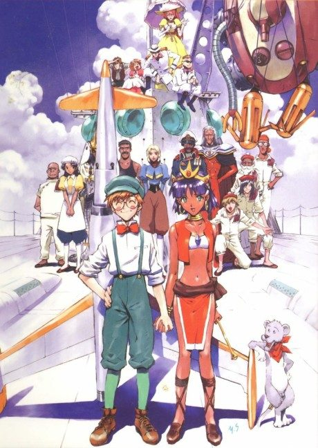

Anime1990 · Adventure, Comedy, Romance
Nadia: The Secret of Blue Water
ふしぎの海のナディア
AniList7.3
Animeter—
Episodes39 ep
MangaOriginal
Is it worth pushing through?
Built from what visitors report across all 39 episodes.
Loading reports…Checking what other people said about this one.
Sign in with your email at the top of the page to add your report.